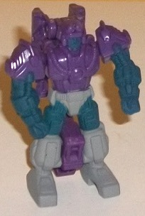
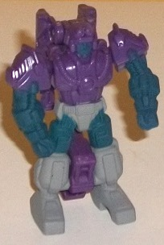
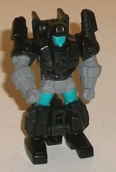
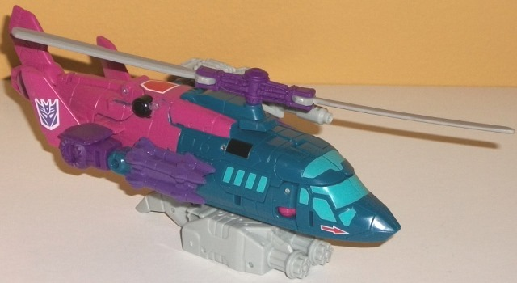
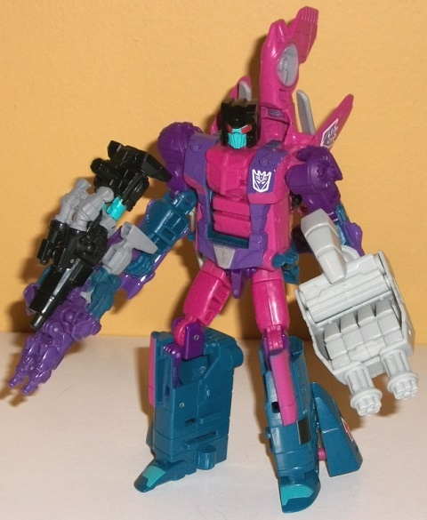

Difficulty of Transformation : Very Easy
Color Scheme : Moderately dark purple, dark flat navy blue, and chalky moderately light gray
Individual Rating : 6.0
Allegiances : Decepticon
(NOTE: Because this set consists of repaints,
this is not a full-blown review. This mainly covers any changes made to
the set and the color schemes. For a review of Combiner Wars Alpha Bravo--
the mold used for Spinister-- look
here
.
For a review Caliburst & Holepunch-- the molds used for Singe and Shrute--
read the review of Generations Scoop w/ Caliburst & Holepunch
here
.)
 Shrute
Shrute

Difficulty of Transformation
: Very
Easy
Color Scheme
: Moderately dark purple,
dark flat navy blue, and chalky moderately light gray
Individual Rating
: 6.0
"Shrute" is the new copyright-friendly
name for Spinister's Targetmaster buddy Hairsplitter, and has a mostly
dark purple coloration, just like Needlenose's partner
Sunbeam
.
Shrute overall has a duller color scheme, however-- in addition to the
purple plastic, he's got a chalky light gray paint used on his waist and
lower legs, and some chalky dark navy blue on his face, lower arms, and
upper legs. The light gray helps add a LITTLE light to the color scheme,
but given that it's gray it doesn't add very much. The dark navy blue complements
the purple fairly well and contrasts against the gray alright as well--
the color scheme overall certainly doesn't clash, but it doesn't look impressive,
either. (A dark navy blue face is kinda odd, though.) The paint on the
appendages wraps all the way around on their respective limbs, even into
the hollow little "holes" on the rear side of said appendages, which is
mildly impressive.
No mold changes have
been made to Shrute.
 Singe
Singe

Difficulty of Transformation:
Very
Easy
Color Scheme
: Black, chalky moderately
light gray, and some moderately light sky blue
Individual Rating
: 5.7
As you'd expect, Singe
is the black one out of Spinister's two Targetmasters. Compared to Shrute,
he has relatively little paint-- beyond the black plastic, he has chalky
light gray (the shade as on Shrute) on his lower arms and waist, and some
nice light sky blue on his face and part of his upper legs. He also has
paint apps wrapping around his whole appendages, like with Shrute, and
also like Shrute his blue face looks odd. I really like how the sky blue
interacts with the black, and really wish it had been used more-- the gray
by itself doesn't add much to black. That said, at least black is a really
appropriate color for a gun...
No mold changes have
been made to Singe.
 Spinister
Spinister


Allegiance
: Autobot
Size
: Deluxe
Difficulty of Transformation to Robot
:
Easy
Difficulty of Transformation to Leg:
Very Easy
Difficulty of Transformation to Arm
:
Very Easy
Color Scheme
: Dull pink, dark teal,
moderately dark purple, and some light gray, silver, moderately light blue,
glossy black, white, and red
Individual Rating
: 8.8
Spinister this time around
is more of a direct G1 update than any of his previous redecoes, and man,
FunPub pretty much nailed the color layout this time. He looks like he's
made of Starburst-- which is typical for late '80s Decepticons. His major
colors are a dark teal (mostly on the front/legs and lower arms), a dull
pink (used mostly on the back end/chest and upper legs and backpack), and
purple (on the lower arms, painted on much of the chest, and also used
on many of the connector pieces). It's a pretty unique color scheme, and
all of the main colors both complement and contrast against each other
very well (though obviously it's not a remotely realistic color scheme).
There's a good amount of paint breakup throughout the figure, not just
of these three colors but also with several accent colors. Some light blue
is used on the helicopter windows and faceplate, and the blue works quite
well against the darker teal, complementing it pretty nicely. There's also
some bits of black here and there, like near the front, on the head surrounding
the red and teal well, and on a few other small areas. (Speaking of the
head, though, the eyes are just SLIGHTLY off-- they're paint apps of eyes
on what is a molded-in visor, so they did a good job with the paint in
terms of making them look like separate eyes, but the eyes are just a little
too big.) There's also some red arrows near the front of the helicopter
mode and a red patch near the top middle, both of which are outlined in
white and reproduce details from the G1 toy. Again, I love all the extra
paint and details, and these are no exception. To finish things off, he's
got just a bit of silver on his waist, and some light gray plastic used
for his rotor and weapons. It's not that milky shade of the plastic, so
though I still wish they were a more attractive color, at least the gray
looks solid. One minor downside I would level at Spinister, though, is
that he has a bit too MUCH paint. There's black paint inside the little
holes where his weapons fit in in his helicopter mode, and pink paint around
the mushroom peg that allows the rear rotor section to turn. This stuff
is going to come off by itself during just casual play, so I assume this
was some sort of miscommunication with the factory-- it's not a big bummer,
but it is a bummer.
No mold changes have
been made to Spinister, but he doesn't really need any-- the head is already
pretty darned close to G1 Spinister's, anyways.
Spinister is pretty much
the definite version of the character for now (at least until/if Hasbro
possibly makes him a completely new mold solely intended for him), with
a fantastic color scheme that definitely marks him as a late '80s toy,
lots of paint apps, and he can combine too if you want (though by no means
do I recommend this toy less if you don't want to combine him). This is
my favorite color scheme this mold has had, and this blows the
BotCon
2012
version out of the water, at least as far as a "direct G1 update"
(though the Botcon version works better as a "movie" Spinister). The Targetmasters
are decent enough accessories, though certainly not what I'd buy this toy
for-- one of my favorites of the TFSS 4.0 figures, and that's saying quite
a lot.
Reviews by Beastbot